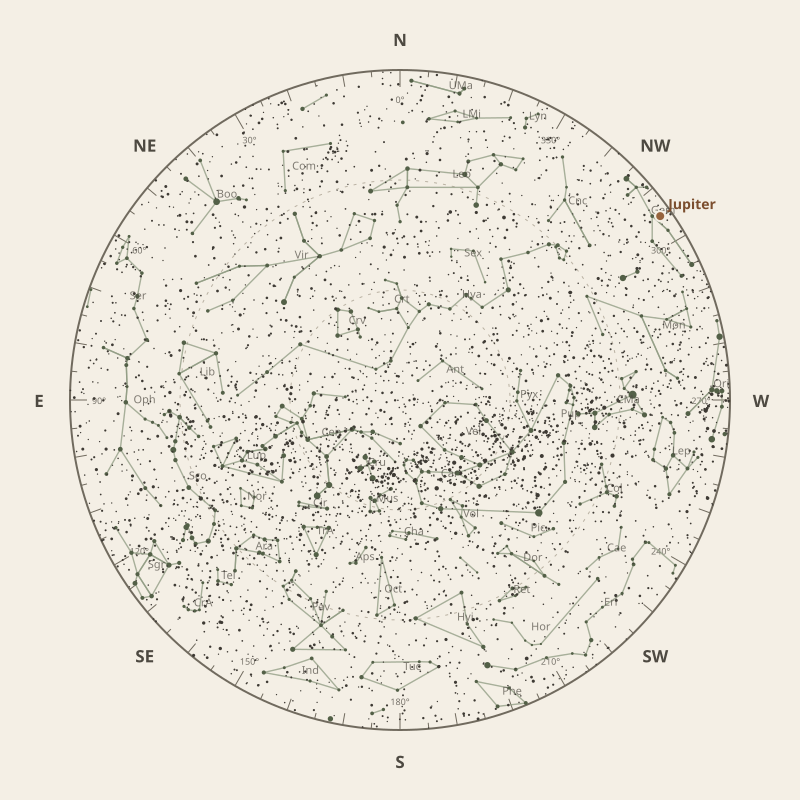

← Annual almanac
North is at the top; east is at the left. Solar System objects shown are above the horizon at 10 pm.
Monthly field almanac
April 2026


Galactic Centre viewing is best on 20 Apr 2026, from 10:13 pm to 6:18 am, reaching 76°.
- New Moon
- 18 Apr Darkest skies
- Full Moon
- 2 Apr Brightest skies
- Best dark window
- 21 Apr 12h 18m
Current conditions
Checking the sky near Southern Tasmania, Australia…
Sky chart: 15 Apr 2026, 10 pm
Southern Tasmania, Australia local time.
Show static monthly chart

Night planner
Choose a date to see astronomical darkness, Moon interference, Galactic Centre visibility, and planet altitudes and times.
Best low-Moon dark periods this month
- 6:01 pm–6:19 am12h 18m · 19% Moon
- 6:03 pm–6:18 am12h 15m · 11% Moon
- 6:04 pm–6:17 am12h 13m · 5% Moon


Galactic Centre sessions
- 10:04 pm–6:20 am8h 16m · core to 76°
- 10:11 pm–6:19 am8h 08m · core to 76°
- 10:13 pm–6:18 am8h 05m · core to 76°
Events
- HIP 59532 lunar occultation9:21 pm to 10:29 pm; Moon at 30° altitude for the first listed contact.
- HIP 59983 lunar occultation1:32 am to 2:36 am; Moon at 50° altitude for the first listed contact.
- HIP 59984 lunar occultation1:32 am to 2:35 am; Moon at 50° altitude for the first listed contact.
April highlights
- Occultations
HIP 59423 lunar occultation
8:22 pm to 9:27 pm; Moon at 20° altitude for the first listed contact.
- Planetary events
Mercury greatest western elongation
Morning sky; 27.8° from the Sun.
- Minor planets
15 Eunomia
61° altitude; magnitude 10.0.
- Comets
Comet 29P
49° altitude; magnitude 17.4.
- Milky Way
Milky Way core window
7h 45m with 76° altitude.


Moon phases
98%
76%
14%
29%
92%
For faint deep-sky objects, observe when the Moon is below the horizon or weakly illuminated. For lunar relief, observe near the terminator; full Moon is best suited to ray systems and albedo features.
Download Moon phase CSV →

Planet visibility
Evening
- Jupiter14 Apr · 6:00 pm24° · Fair
- Uranus1 Apr · 7:30 pm14° · Poor
- Venus14 Apr · 6:00 pm6° · Poor
 Jupiter
Jupiter Uranus
Uranus Venus
VenusPredawn
- Neptune30 Apr · 6:30 am27° · Good
- Saturn30 Apr · 6:30 am22° · Fair
- Mercury1 Apr · 7:00 am20° · Fair
- Mars19 Apr · 6:30 am16° · Fair
 Neptune
Neptune Saturn
Saturn Mercury
Mercury Mars
Mars